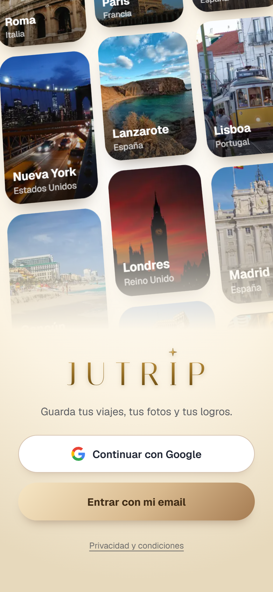
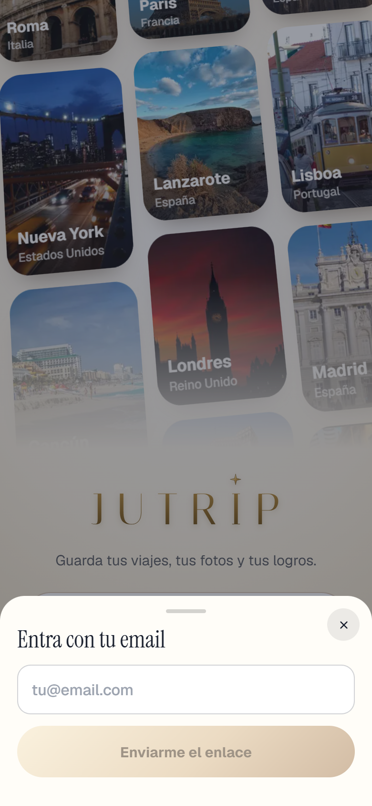
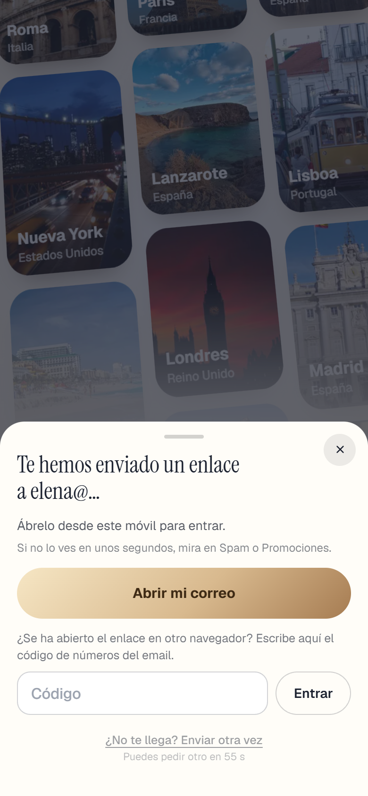
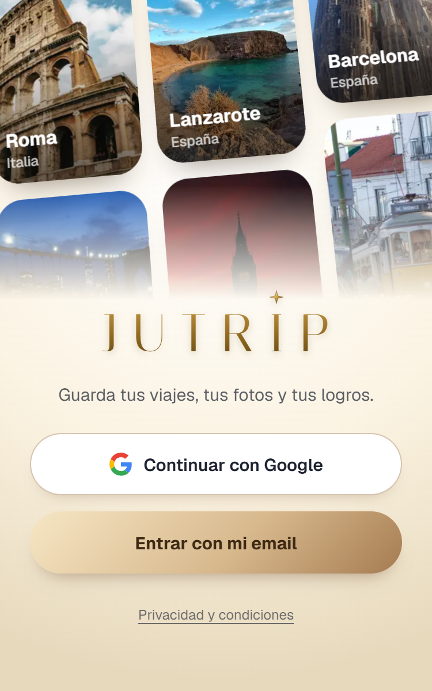
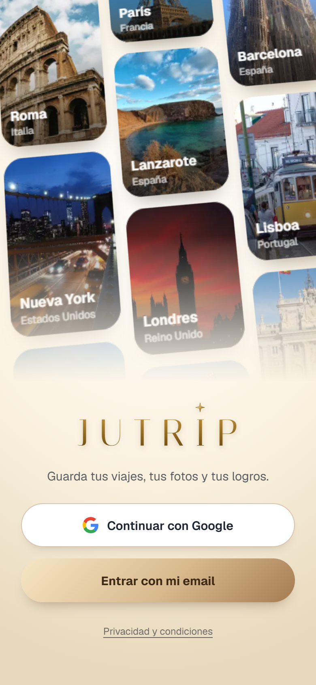

loading="lazy"); mientras llegan, la tarjeta lleva su degradado de color. Con «Reducir movimiento» el mosaico se queda quieto. Sin ninguna consulta a Supabase.entrarConCodigo) y «¿No te llega? Enviar otra vez» siguen debajo, con el estilo de la hoja.pruebaEntrarUnaVez).  
 
Total de las fotos del mosaico: 170 KB (14 archivos). Los autores también están en «Créditos» de la app y el detalle en docs/dias/FOTOS_ENTRADA.md.
| Destino | Archivo | Autor | Licencia | Fuente | Peso |
|---|---|---|---|---|---|
| Roma | /fotos/entrada/roma.webp | La portada que ya tiene el destino en la app (reducida a tamaño de tarjeta) | 14.4 KB | ||
| Lanzarote | /fotos/entrada/lanzarote.webp | La portada que ya tiene el destino en la app (reducida a tamaño de tarjeta) | 12.1 KB | ||
| París | /fotos/entrada/paris.webp | Jebulon | CC0 | https://commons.wikimedia.org/wiki/File:Tour_Eiffel_depuis_un_bateau_sur_la_Seine.jpg | 10.7 KB |
| Londres | /fotos/entrada/londres.webp | Rucksack Magazine rucksackmag | CC0 | https://commons.wikimedia.org/wiki/File:Big_Ben,_London,_United_Kingdom_(Unsplash_p8cUip6Tlwg).jpg | 2.9 KB |
| Madrid | /fotos/entrada/madrid.webp | Zarateman | CC0 | https://commons.wikimedia.org/wiki/File:Madrid_-_Palacio_Real_07.jpg | 12.2 KB |
| Barcelona | /fotos/entrada/barcelona.webp | Ragsssss | CC0 | https://commons.wikimedia.org/wiki/File:La_Sagrada_Familia_in_barcelona.jpg | 11.6 KB |
| Lisboa | /fotos/entrada/lisboa.webp | Jakub Hałun | CC BY 4.0 | https://commons.wikimedia.org/wiki/File:Tram_28_at_Largo_de_Santa_Luzia_in_Lisbon,_20250606_1957_0417.jpg | 14.9 KB |
| Ámsterdam | /fotos/entrada/amsterdam.webp | Kaci Baum kacibaum | CC0 | https://commons.wikimedia.org/wiki/File:Amsterdam_Canal_Houses_(Unsplash).jpg | 16.0 KB |
| Praga | /fotos/entrada/praga.webp | Pierre Blaché from Paris, France | CC0 | https://commons.wikimedia.org/wiki/File:Charles_Bridge_at_Sunset,_Prague_(50489016846).jpg | 10.9 KB |
| Nueva York | /fotos/entrada/nueva_york.webp | MartinThoma | CC0 | https://commons.wikimedia.org/wiki/File:Brooklyn-Bridge-10.jpg | 11.2 KB |
| Cancún | /fotos/entrada/cancun.webp | Autor desconocido (CC0) | CC0 | https://commons.wikimedia.org/wiki/File:Canc%C3%BAn,_Q.R.,_MX.jpg | 8.6 KB |
| Florencia | /fotos/entrada/florencia.webp | Jebulon | CC0 | https://commons.wikimedia.org/wiki/File:Fa%C3%A7ade_cath%C3%A9drale_Florence.jpg | 17.2 KB |
| Berlín | /fotos/entrada/berlin.webp | Gary Todd from Xinzheng, China | CC0 | https://commons.wikimedia.org/wiki/File:Berlin_Brandenburg_Gate_(28150532233).jpg | 9.3 KB |
| Cartagena de Indias | /fotos/entrada/cartagena_de_indias.webp | Pedro Szekely from Los Angeles, USA | CC BY 2.0 | https://commons.wikimedia.org/wiki/File:Cartagena,_Colombia_(5043733874).jpg | 17.5 KB |
public/fotos/entrada/).
.jpg){kind=link}


.jpg){kind=link}
.jpg){kind=link}


.jpg){kind=link}
.jpg){kind=link}